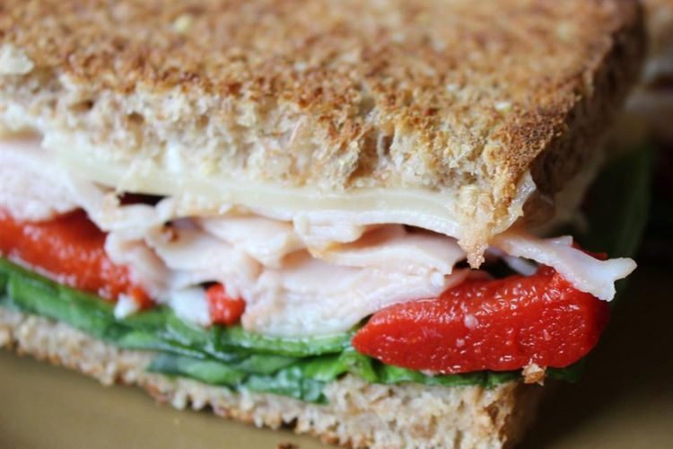

Set oven rack about 6 inches from the heat source and preheat the oven's broiler.
Spread mayonnaise onto 1 side of each bread slice. Layer Swiss cheese, turkey, and spinach onto the mayonnaise-side of 1 bread slice; top with second bread slice. Place sandwich on a baking sheet.
Broil in the preheated oven until heated through and cheese is bubbling, about 5 minutes.
